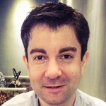
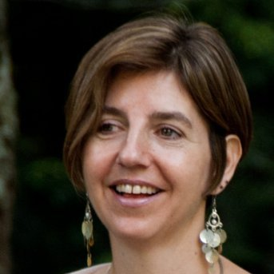
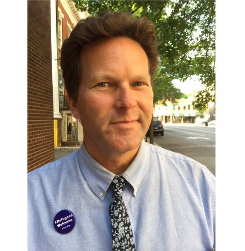

Mick Hirsch
Panel on Issues in Child Refugee Health
Mick Hirsch ('03, M.Div.) is a writer, researcher and advocate for refugees and migrants. A graduate of the University of Chicago and Yale University, he has also studied at the Harvard Program for Refugee Trauma and the European Graduate School. He has worked in refugee resettlement both in the United States and Cambodia, where he served as Visiting Assistant Professor in the Department of Psychology at the Royal University of Phnom Penh, teaching trauma recovery. An expert in planning comprehensive support systems for urban refugees, Mick directed a country-wide urban refugee program in Cambodia in partnership with the UNHCR. Mick has been invited to speak at the First Global Forum on Statelessness at the Peace Palace in The Hague, the Asia Pacific Sociological Association in Chiang Mai, Thailand and Duke University, among others.

Othman Shibly
Panel on Issues in Child Refugee Health
Othman Shibly, Clinical Professor, is currently Director, Post Graduate Program in Periodontics; Coordinator, International Advanced Dental Education Scholar Program; and Associate Director for the Center for Dental Studies at the School of Dental Medicine at University of Buffalo. Since the March 2011 crisis in Syria, Dr. Shibly has pursued the medical mission to help Syrian refugees in Jordan, Turkey and Lebanon. He established two dental clinics in Turkey to provide free dental care on a daily basis for refugees. Dr. Shibly is consultant to and supervisor of more than 16 schools in the war areas suburb of Damascus; these schools include more than 5,000 students. On October 5th, 2016, Dr. Shibly won the Shills Award in recognition of his leadership and commitment to serving the global dental needs of those in distress.

Maya Prabhu
Panel on Issues in Child Refugee Health
Maya Prabhu, M.D., LL.B., is Assistant Professor at Yale School of Medicine. She serves as faculty with the Law and Psychiatry Division at Yale School of Medicine. Her research interests include forensic psychiatry, PTSD, especially in post-conflict situations, and various issues at the nexus of health and international law.
Dr. Prabhu obtained her medical degree from Dalhousie Medical School in Halifax, Nova Scotia and completed residency training in adult psychiatry and a fellowship in forensic psychiatry at Yale. Between medical school and residency, she graduated from the McGill Faculty of Law in Montreal, Canada and was a lawyer with Davis Polk & Wardwell in New York and the United Nations Independent Inquiry Committee into the Iraq Oil-for-Food program.

Claudia Connor
Panel on Refugee Integration and Law
Claudia Connor is the President & CEO of IICONN. She has close to 30 years of program management, advocacy, and legal and strategic leadership experience in the non-profit sector in the United States, Africa and Southeast Asia. Prior to coming to IICONN in April 2015, Claudia worked at Save the Children on the Strategic Foundation Partnerships team. Previously, she worked at the International Rescue Committee (IRC) as a Senior Technical Advisor in the Governance & Rights Unit, Regional Director in the US Programs supervising refugee resettlement offices across the US, and as Director of National Refugee Resettlement Programs. Overseas, Claudia was a consultant with UNICEF and the Carter Center among other agencies, working on issues such as child trafficking and child soldiers, women’s rights, juvenile justice and the impact of HIV/AIDS.
Before moving overseas in 1998, Claudia was a senior trial attorney for Legal Aid Society in New York. She has her J.D. from Brooklyn Law School and a B.A. in History from University of North Carolina, Chapel Hill. Claudia lives in Norwalk with her husband and their three boys, ages 12, 16 and 17.

Jennifer Nagda
Panel on Refugee Integration and Law
Jennifer Nagda is Policy Director for the Young Center for Immigrant Children’s Rights, where her work focuses on developing a best interests of the child standard for unaccompanied immigrant children. Jennifer has worked at the Young Center since 2008 as a staff attorney and later as the associate director. She is currently a Lecturer in Law at the University of Pennsylvania Law School’s Interdisciplinary Child Advocacy Clinic and she previously taught at the University of Chicago Law School. Prior to her work with the Young Center, Jennifer was a staff attorney at the Midwest Regional Office of the Mexican American Legal Defense and Educational Fund (MALDEF), where she represented students, employees and immigrant families. From 2004-2006, Jennifer clerked for the Honorable James B. Zagel of the U.S. District Court for the Northern District of Illinois. Prior to law school, Jennifer was the Associate Director of what is now the CityBridge Foundation in Washington DC, and also worked for the Corporate Executive Board and Advisory Board companies. Jennifer received her J.D. from the University of Chicago Law School and her undergraduate degree from Duke University. With Maria Woltjen she authored the article “Best Interests of the Child Standard: Bringing Common Sense to Immigration Decisions,” which was published in Pioneering Change: Innovative Ideas for Children and Families, Big Ideas, First Focus(2015).

Selcuk R.Siring
Talk on Refugee Children need Hope
Selcuk R. Sirin is the J. K. Javits Professor at New York University. Dr. Sirin studies the lives of marginalized children and youth and ways to increase professionals’ ability to better serve their needs. His recent research focuses on immigrant children in New York, Muslim youth in the US, and refugee children in Turkey and Norway. His work was published in top journals, such as Child Development, Developmental Psychology, Review of Educational Research, and Pediatrics. He is also the author of multiple books in English and Turkish, including Turkey at the Crossroad: Freedom or Misery (2015) and Muslim American Youth (2008). He is the recipient of the Young Scholar Award from the Foundation for Child Development for his work on immigrant children, and the Review of Research Award from the American Educational Research Association (AERA) . Sirin currently serves on the National Academies of Sciences Committee on Supporting the Parents of Young Children.

Will Kneerim
Panel on Current Voices
Will Kneerim has over 25 years of experience in international trade, real-estate and international logistics. His career includes multinationals based in Singapore, the Netherlands Antilles, San Francisco and Seattle. Will transitioned to the non-profit sector where he has been the Director of Employment and Education for over 5 years at IRIS (Integrated Refugee and Immigrant Services) in New Haven. Will is also an avid teacher, youth coach and board member.